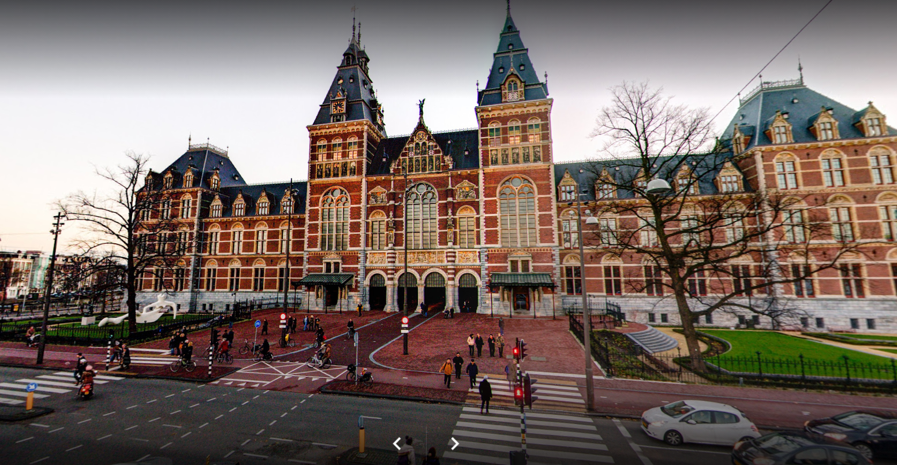
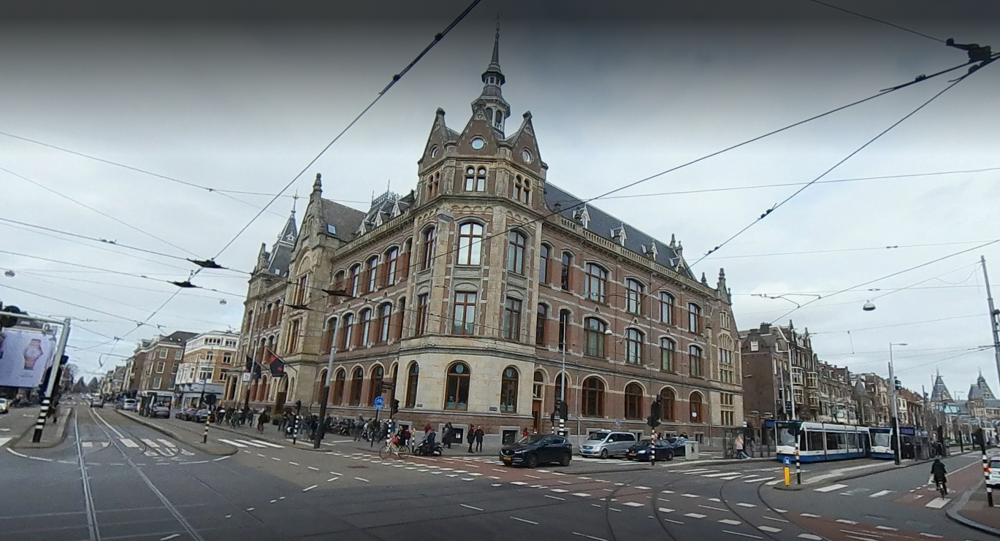

Museums in Amsterdam
Visit our greatest museums
Rijksmuseum
Location: Timorplein 62
This is the largest and best-known museum in the country. The building is a national monument, designed by the architect Cuijpers, who also designed Central Station. It houses an internationally renowned collection of paintings from the Dutch Golden Age, with Rembrandt’s Night Watch as the centrepiece. Rijksmuseum also has Delftware, drawings and Asian art. Visit the website for more details: www.rijksmuseum.nl.
Het Stedelijk Museum
Location: Museumplein 10
Het Stedelijk Museum focuses on modern contemporary art. It has a famous collection of paintings by Picasso, Mondriaan, and Warhol, sculptures, photographs and graphic designs. You can’t miss the museum’s new wing. It has not been nicknamed ‘the bathtub’ for nothing. Visit the website for more details: www. stedelijk.nl.
Van Gogh Museum

Location: Museumplein 6
Van Gogh Museum boasts the largest collection of paintings in the world by the famous Dutch painter Vincent van Gogh. The museum also hosts temporary exhibitions featuring 19th-century art and related subjects. Visit the website for more details: www.vangoghmuseum.nl.